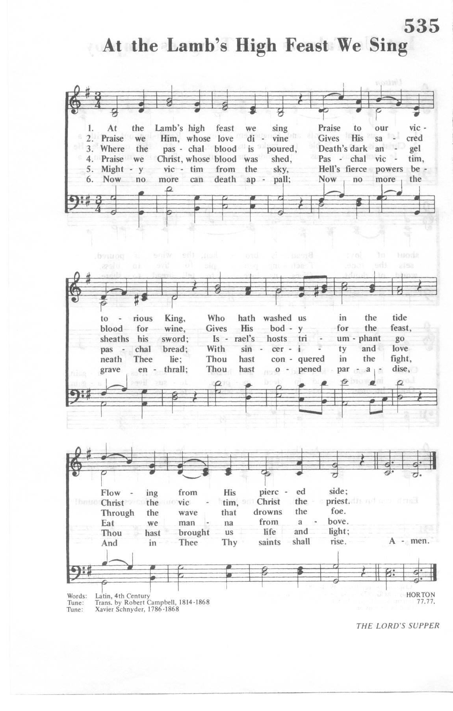

|
|
颂主新歌 |
|
1 Come, my soul, thy suit prepare, 2 Thou art coming to a King, 3 With my burden I begin, 4 Lord! I come to Thee for rest, 5 While I am a pilgrim here, 6 Show me what I have to do; |
1.我速备心来祈祷，主愿垂听祈祷声，
|
|
https://www.mred365.cn/szxg/7369.html
 |
|
|
|
|


Come, My Soul, Thy Suit Prepare (Horton) https://youtu.be/anH_4_cNEiA -
https://youtu.be/FgwuyPrJFAA
| Text: | Come, My Soul, Thy Suit Prepare |
| Author: | John Newton, 1725-1807 |
| Tune: | HORTON |
| Composer: | Xavier Schnyder, 1786-1868 |
| Short Name: | John Newton |
| Full Name: | Newton, John, 1725-1807 |
| Birth Year: | 1725 |
| Death Year: | 1807 |
John Newton (b. London, England, 1725; d. London, 1807)

was born into a Christian home, but his godly mother died when he was seven, and he joined his father at sea when he was eleven. His licentious and tumultuous sailing life included a flogging for attempted desertion from the Royal Navy and captivity by a slave trader in West Africa. After his escape he himself became the captain of a slave ship. Several factors contributed to Newton's conversion: a near-drowning in 1748, the piety of his friend Mary Catlett, (whom he married in 1750), and his reading of Thomas à Kempis' Imitation of Christ. In 1754 he gave up the slave trade and, in association with William Wilberforce, eventually became an ardent abolitionist. After becoming a tide-surveyor in Liverpool, England, Newton came under the influence of George Whitefield and John and Charles Wesley and began to study for the ministry. He was ordained in the Church of England and served in Olney (1764-1780) and St. Mary Woolnoth, London (1780-1807). His legacy to the Christian church includes his hymns as well as his collaboration with William Cowper (PHH 434) in publishing Olney Hymns (1779), to which Newton contributed 280 hymns, including “Amazing Grace.”
Bert Polman
Come, my soul, thy suit prepare. J. Newton. [Prayer.] Appeared in the Olney Hymns, 1779, Book i., No. 31, in 7 stanzas of 4 lines, and in later editions of the same. It was included in some of the older collections, and is still in extensive use in Great Britain and America, sometimes in full, and again in an abbreviated form. Original text as above, aud in Lyra Britannica, 1867.
--John Julian, Dictionary of Hymnology (1907)
Tune Information
| Title: | HORTON (Schnyder) |
| Composer: | Franz Xavier Schnyder von Wartensee |
| Meter: | 7.7.7.7 |
| Incipit: | 51311 65542 31657 |
| Key: | A Major |
| Copyright: | Public Domain |
| Short Name: | Franz Xavier Schnyder von Wartensee |
| Full Name: | Schnyder von Wartensee, Franz Xavier, 1786-1868 |
| Birth Year: | 1786 |
| Death Year: | 1868 |
Words: John Newton (b. July 24, 1725; d. Dec. 21, 1807)
Music: Hendon, by Henri Abraham Cesar Malan (b. July 7,
1787; May 18, 1864)
Links:
Wordwise Hymns
The Cyber
Hymnal
Note: The Cyber Hymnal offers a number of possible tunes for this hymn. Hendon, to which we also sing Take My Life and Let It Be, works well. There were seven stanzas in the original. Commonly CH-3 and 5 are omitted today. The poetry of the latter is a bit awkward, but it is unfortunate to lose CH-3. Especially in times of private devotion, it is important to deal with sin in our lives.
CH-3) With my burden I begin:
Lord, remove this load of sin;
Let Thy blood, for sinners spilt,
Set my conscience free from guilt.
The hymn was first published in Newton’s Olney Hymns, in 1779. A century later, it was used often by the great Baptist preacher, Charles Haddon Spurgeon. Before times of prayer in the services of the great Tabernacle, Spurgeon would have the congregation sing a stanza or two, softly. (And all singing in the Tabernacle was done without instrumental accompaniment.)
Iwonder what the modern reader will think of when seeing the opening line of this fine hymn (also used as the title). Perhaps dry-cleaning or pressing an article of clothing! But Newton is using the word as we would in speaking of a law suit. He means an argument or an appeal. He is calling upon us to prepare a prayer list, things we want to ask the Lord to grant us. The hymn takes its inspiration from Jehovah God’s words to Solomon at the beginning of his reign:
The LORD appeared to Solomon in a dream by night; and God said, “Ask! What shall I give you?” (I Kgs. 3:5).
In laying our requests before God, we are responding personally to that question. And what assurances do we have, as we come to the place of prayer? We are assured that the Lord Himself has invited us (indeed, commanded us) to pray (Phil. 4:6), and that He loves to answer prayer (Ps. 37:4; Prov. 15:8, 29; CH-1). The second stanza provides a wonderful declaration of heavenly abundance.
CH-2) Thou art coming to a King,
Large petitions with thee bring;
For His grace and power are such,
None can ever ask too much.
Having established heaven’s bounty (cf. Phil. 4:19), what sort of things should we pray for? (And I’m thinking here of personal requests. I realize our prayers should also include intercession for the needs of others.)
We can confess our sins to Him and seek His forgiveness (I Jn. 1:9; CH-3). We can pray for rest of spirit, serenity in trying times (Matt. 11:28-30), and we can pray that God would reign as Lord of all in our lives (Ps. 40:8; 143:10; cf. Lk. 6:46; CH-4). We can pray that He would guide and guard us on life’s journey (Ps. 31:3; Prov. 3:5-7), and grant us joy in living for Him and serving Him (Jn. 16:24; Rom. 14:17; Gal. 5:22; Phil. 4:4; CH-6). We can pray that the Lord would show us how to spend each day, giving us enabling grace to do it, and increasing our faith in Him (II Cor. 12:9; Heb. 4:15-16; CH-7).
CH-6) While I am a pilgrim here,
Let Thy love my spirit cheer;
As my Guide, my Guard, my Friend,
Lead me to my journey’s end.
CH-7) Show me what I have to do,
Every hour my strength renew:
Let me live a life of faith,
Let me die Thy people’s death.
Questions:
1) Given the invitation to pray, and the Lord’s wisdom, love and power,
why are so many of us lacking in a consistent prayer life?
2) In your view, what things are most commonly missing in the content of our prayers?
Links:
Wordwise Hymns
The Cyber
Hymnal
https://wordwisehymns.com/2012/06/13/come-my-soul-thy-suit-prepare/
Come, My Soul, Thy Suit Prepare congsing.org
Ask what I shall give thee. (God to Solomon in 1 Kings 3:5)
John Newton, 1779
Addressed to oneself and God
| Come, my soul, thy suit prepare: | Luke 18:1–8 |
| Jesus loves to answer prayer; | John 14:13 |
| he himself has bid thee pray, | Matt. 7:7; Phil. 4:6 |
| therefore will not say thee nay. | Mark 11:24; John 16:23 |
| Thou art coming to a King, | Ps. 10:16; Heb. 4:16 |
| large petitions with thee bring; | Ps. 81:10 |
| for his grace and pow’r are such, | |
| none can ever ask too much. | |
| With my burden I begin: | Luke 18:13 |
| “Lord, remove this load of sin; | Matt. 6:12 |
| let thy blood, for sinners spilt, | Matt. 26:28; Rom. 5:9; Eph. 1:7 |
| set my conscience free from guilt. | Heb. 9:14; 10:22 |
| “Lord, I come to thee for rest, | Matt. 11:28 |
| take possession of my breast; | Matt. 6:10 |
| there thy blood-bought right maintain, | Ex. 15:16; Ps. 74:2 |
| and without a rival reign. | Ex. 20:3 |
| “While I am a pilgrim here, | |
| let thy love my spirit cheer; | Matt. 6:11 |
| as my Guide, my Guard, my Friend, | Ps. 48:14; Ps. 12:7; Ps. 25:14 |
| lead me to my journey’s end. | Ps. 23:4–6; Matt. 6:13 |
| “Show me what I have to do, | Ps. 119:29 |
| ev’ry hour my strength renew: | Is. 40:31 |
| let me live a life of faith, | Phil. 1:27 |
| let me die thy people’s death.” | Rev. 2:10 |
This hymn is an incitement to pray boldly. Its opening line is one of the finest in all hymnody. Am I to sue God?! Exactly. He made promises, and I am going to remind him of them. He has bid me appear before his throne with petitions, and I shall obey. If I pray for what is necessary to his glory, then it is only proper that I press my case urgently and persistently. The more I ask of God, the more glory redounds to his mercy and faithfulness—and the more training my heart has in turning from idols to depend on God (Zech. 10:1–2). As the Epistle of James explains with characteristic directness: “You do not have, because you do not ask” (4:2).
But note, too, the verb in the first line of the poem. I am to prepare the suit. Freedom before God is not the same as carelessness. If, in the rest of my life, I usually give some thought ahead of time to important conversations, why would I not do the same in preparation for prayer? “Be not rash with your mouth, nor let your heart be hasty to utter a word before God, for God is in heaven and you are on earth” (Eccl. 5:2). C. H. Spurgeon’s congregations at the Metropolitan Tabernacle regularly got ready for the long prayer by singing a stanza or two of “Come, My Soul, Thy Suit Prepare.”
If stanzas 1–2 embolden congregants to ask for high and big things, stanzas 3–6 provide one example of what that might look like. These stanzas do not constitute a model prayer, because they contain no confession, thanksgiving, or adoration—only petitions. And even as a model for petition they are incomplete, because the petitioning is only for oneself, not for anyone else. But no hymn can comprehensively model the nature and matter of prayer without being too general for the purposes of prayer and too long for the purposes of congregational song. What this hymn does do, however, it does very well—theologically, poetically, and musically.
Consider the strategic use of alliteration. “Soul” and “suit” occur on stresses as part of weak–strong groups (“my soul” and “thy suit”) which couple the two words. The “p” sound, so prominent in English forms of petition (e.g., in words like plea, please, and appeal), occurs four times in the first three lines. The alliteration in stanza 2, line 1 imitates the explosive approach of a child who comes to his father, yet the words are “coming” and “king.” The slithering sibilance in the third stanza—the one on sin (which originated with the serpent)—is impossible to miss: “this,” “sin,” “sinners,” “spilt,” and “set” relate obviously, and even “conscience” participates.
The meter is trochaic, but a dangling stress finishes each line. This coupling of trochaic meter with end-stopped lines gives the whole a rhythmic boldness befitting the subject.
The third stanza begins with some helpful wordplay, which pastors can easily explain to their congregations. The “burden” with which I begin my petitions is sin. It weighs me down, just as it did Christian in Pilgrim’s Progress. But “burden” can also be a term for a refrain or chorus, as when Ariel in The Tempest sings, “Foot it featly here and there; / And, sweet sprites, the burthen bear” (act 1, scene 2, lines 379–80). Thus, my requests for forgiveness are a constant refrain in my prayers. Jeremiah 23:33–40 uses the same double meaning to the same effect.
The tune HENDON is a nice choice with its five closely-related melodic units that fit Newton’s end-stopped lines. Four of the five begin with repeated notes, which underscore the insistence of the text. So does the opportunity, afforded by the tune’s fifth melodic unit, to sing twice the last words of every stanza.
http://www.congsing.org/come_my_soul_thy_suit.html